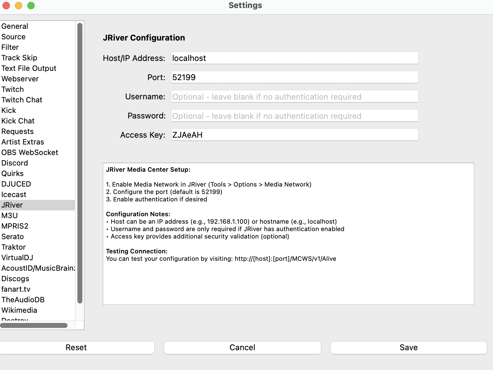

JRiver¶
JRiver Media Center is a commercial media player application that runs on Windows, Mac, and Linux. What’s Now Playing connects to JRiver using the MCWS (Media Center Web Service) API to retrieve currently playing track information.
The JRiver input source supports both local and remote connections to JRiver Media Center instances. For local connections, What’s Now Playing can also retrieve the full file path of the currently playing track.
Requirements¶
JRiver Media Center (version 20 or later recommended)
MCWS (Media Center Web Service) enabled in JRiver
Network connectivity between What’s Now Playing and JRiver (if running on different machines)
Setup Instructions¶
JRiver Configuration¶
Open JRiver Media Center
Go to Tools → Options → Media Network
Check Use Media Network to share this library
{kind=link}
Note the Access Key if one is displayed (optional but recommended for security)
{kind=link}
Configure authentication if desired:
Check Require authentication for requests
Set a Username and Password
{kind=link}
Note the Port number under Advanced and in some of the previous displays (default is 52199)
Click OK to save settings
What’s Now Playing Configuration¶
Open Settings from the What’s Now Playing icon
Select Input Source from the left-hand column
Select JRiver from the list of available input sources
Select JRiver from the left-hand column to configure settings
Configuration Options¶
{kind=link}
- Host/IP Address
The hostname or IP address of the machine running JRiver Media Center.
Use
localhostor127.0.0.1if JRiver is on the same machineUse the IP address (e.g.,
192.168.1.100) for remote connectionsIPv6 addresses are supported and will be automatically formatted correctly
- Port
The port number for MCWS connections (default:
52199)- Username (Optional)
Username for authentication if required by JRiver
- Password (Optional)
Password for authentication if required by JRiver
- Access Key (Optional)
Access key for additional security validation if configured in JRiver
Connection Types¶
Local Connections¶
Local connections are automatically detected for:
localhost,127.0.0.1,::1Private IP addresses (192.168.x.x, 10.x.x.x, 172.16.x.x)
Local domain patterns (
.local,.lan,.home,.internal)
For local connections, What’s Now Playing will attempt to retrieve the full file path of the currently playing track, which can be useful for other applications or logging.
Remote Connections¶
Remote connections are used for all other hostnames and public IP addresses. File paths are not retrieved for remote connections for security reasons.
Testing Your Connection¶
You can test your JRiver MCWS configuration by opening a web browser and visiting:
http://[host]:[port]/MCWS/v1/Alive
For example: http://localhost:52199/MCWS/v1/Alive
This should return an XML response showing your JRiver server information if the connection is working correctly.
Troubleshooting¶
Connection Failed¶
Verify JRiver Media Center is running
Check that Media Network is enabled in JRiver settings
Ensure the correct host/IP address and port are configured
For remote connections, verify network connectivity and firewall settings
Authentication Failed¶
Verify username and password are correct (if authentication is enabled)
Check that the access key matches (if configured)
Ensure authentication is properly enabled in JRiver if credentials are provided
No Track Information¶
Ensure music is currently playing in JRiver
Check that JRiver is not paused
Verify the MCWS API is responding by testing the connection URL in a browser
File Path Not Available¶
File paths are only available for local connections. Remote connections will not include file path information for security reasons.
Supported Track Information¶
The JRiver input source provides the following track metadata:
Artist - Track artist name
Album - Album name
Title - Track title
Duration - Track length in seconds
Filename - Full file path (local connections only)
Additional track metadata may be available depending on how the tracks are tagged in JRiver.